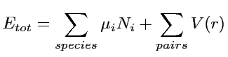

Analytic pair potentials can be enabled in potfit by compiling it with the apot switch. There are some additional options for analytic potentials like the chemical potentials or the smooth cutoff.
For fitting simple pair potentials the use of the chemical potentials will always be
enabled unless the disable_cp switch in the configuration file is set to 1.
This option effectively adds another energy term into the calculations, the energy
will be calculated as

With this feature enabled, the potential file has to be altered, an additional block
has to be added right after the header.
#F 0 3 #C Mg Zn #I 0 0 0 #E cp_Mg -1 -10 0 cp_Zn -1 -10 0
There has to be one line per element, starting with cp_, the rest of the name
will be replaced by the element name (if the #C line is available) or the element number.
The following three values are the starting value, the minimum and maximum for that parameter.
For EAM-potentials this option is not available and lines beginning with cp_ will be ignored.
The smooth cutoff function is very important for analytic potentials since it ensures that the
potential and its gradient vanish at the desired cutoff radius.
Therefor the potential is replaced by a cubic polynomial at a certain range.
To enable the smooth cutoff for a potential, _sc has to be added to the potential identifier.
type lj_sc cutoff 7 ...
Potentials fitted with the _sc option will have an additional line in the output potential.
type eopp_sc cutoff 7.000000 # rmin 2.199710 # r_0=5.950000 a_0=-0.001038 a_1=0.020511 a_2=-0.134513 a_3=0.292712 ...
This line indicates, that the cutoff function was applied at a range of 5.95 and the cubic polynomial was a_0*r^3+a_1*r^2+a_2*r+a_3.
The currently implemented analytic potential functions can be found here.
If you want to add other analyic potentials see this guide.